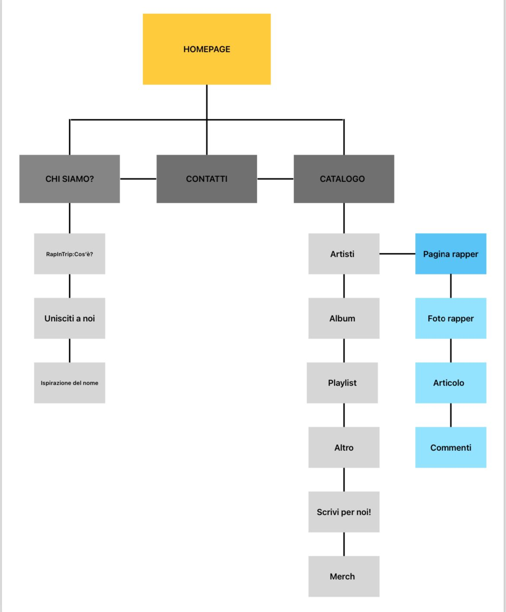
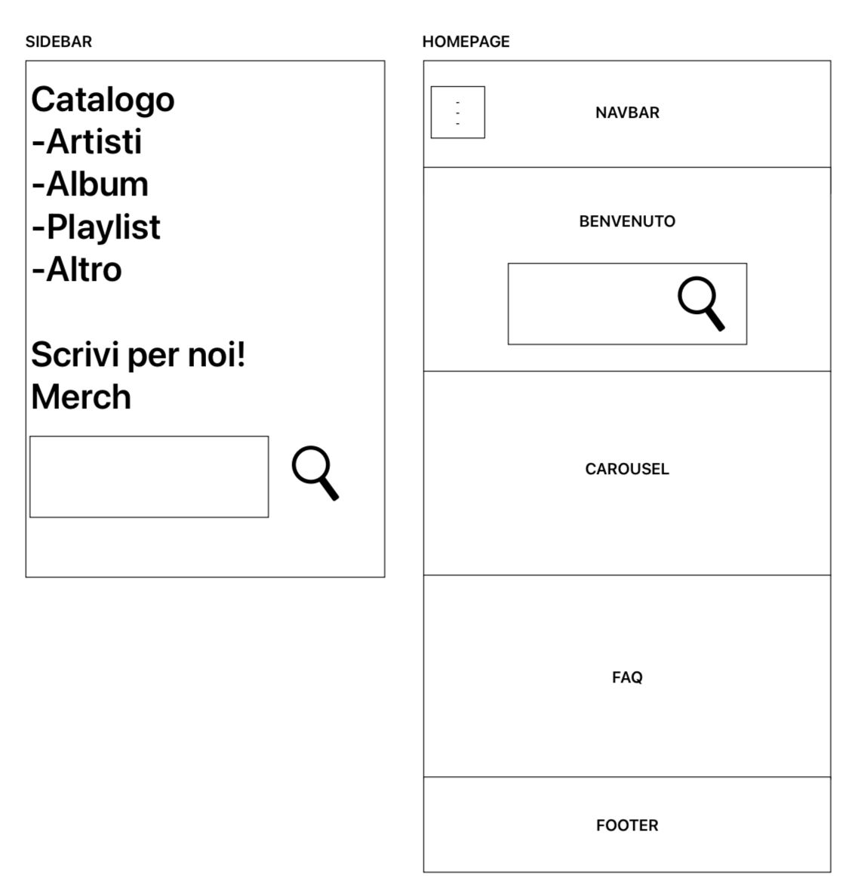
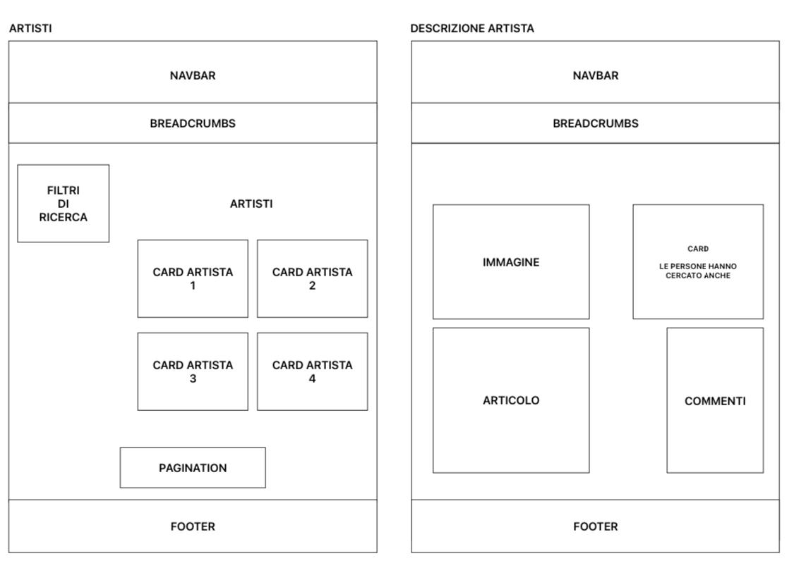

Web Project Plan
1. Brief
1.1 Finalità e obiettivi del progetto
Il progetto mira a creare una risorsa interattiva e multimediale che esplora la storia del rap italiano, offrendo una panoramica approfondita e interdisciplinare delle trasformazioni culturali e artistiche nel panorama musicale urbano. L'obiettivo è fornire agli utenti una piattaforma completa e coinvolgente per esplorare la storia del rap in Italia attraverso testi, immagini, video e altre risorse. Il progetto coinvolge attivamente gli utenti, offrendo la possibilità di suggerire articoli e condividere opinioni per approfondire la comprensione della cultura hip-hop italiana.
1.2 Pubblico di riferimento
Il sito è dedicato agli appassionati di musica rap, studenti, studiosi,
professionisti del settore culturale e tutti coloro che sono interessati a
esplorare l'evoluzione del rap italiano.
La natura provocatoria del progetto si
rivolge principalmente a persone aperte di mente e interessate a superare i taboo culturali.
1.3 Accesso alla risorsa
La risorsa sarà accessibile tramite un sito web dedicato, con la possibilità di creare un account per accedere a
contenuti premium e funzionalità avanzate come comprare merch o suggerire e scrivere articoli da pubblicare.
Sarà inoltre disponibile una versione ottimizzata per dispositivi mobili.
1.4 Contenuti
1.4.1 Nel prototipo
Il prototipo includerà un compendio di testi e immagini che documentano le varie fasi della storia del rap italiano.
I contenuti saranno organizzati per categorie tematiche, tra cui l'evoluzione degli artisti e dei brani presenti nei loro album,
caratterizzata
dalle influenze culturali e sociali, nonchè dalle innovazioni nel panorama musicale urbano. Ogni fase storica
del rap italiano sarà contestualizzata per offrire una visione approfondita.
1.4.2 Sviluppi futuri
Nei prossimi sviluppi, il progetto mira ad ampliare la base di contenuti, includendo analisi approfondite su
artisti e brani specifici, interviste esclusive, podcast tematici e la creazione di una comunità online.
Gli utenti registrati potranno suggerire e scrivere articoli, che saranno sottoposti a revisione prima
della pubblicazione.
Ulteriori funzionalità includono la disponibilità diretta di contenuti musicali
tramite link a piattaforme di streaming e la vendita di merchandising come magliette, vinili e cd per consolidare la community.
2. Benchmark
2.1 Analisi di mercato
Non sembrano esistere dei siti Internet con un fine come il mio, anche se ci sono diversi articoli/blog dove si parla di come è
nato il rap in italia, ma un Sito che parla anche nello specifico di ogni rapper di ogni fase storica non esiste.
Come struttura il sito prende molti elementi da Blog e da enciclopedie online come Wikipedia.
2.2 Siti esistenti
Un sito con una struttura simile, soprattutto nell'ambito della pubblicazione di articoli dalla parte degli utenti (anche se in un ambito diverso, quello dei videogiochi),
si chiama “giantbomb.com”.
Nel sito è molto forte la componente “community” infatti mira soprattutto a creare una solida comunità che contribuisce
attivamente ai forum e al wiki.
Un sito invece con una finalità simile è "AllMusic". Questo sito è una risorsa completa per la musica di tutto il mondo, con recensioni,
biografie di artisti, e informazioni su album e brani di ogni genere.
2.2.1 Giant Bomb
Giant Bomb è un sito web dedicato ai videogiochi, fondato nel 2008 da Jeff Gerstmann e Ryan Davis. Il sito è noto per
il suo approccio unico, che enfatizza personalità, contenuti e opinioni forti. Offre inoltre una vasta
gamma di contenuti, tra cui:
-Recensioni: Analisi dettagliate dei videogiochi.
-Video: Comprendono "Quick Looks," "Unfinished," "Endurance Runs," e live streams.
-Podcast: Il "Giant Bombcast" e il "Giant Beastcast" con discussioni settimanali su giochi e notizie.
-Wiki: Un database creato dagli utenti con informazioni su giochi e personaggi.
-Notizie: Aggiornamenti su eventi e nuovi rilasci nell'industria dei videogiochi.
La comunità è molto attiva, contribuendo ai forum e al wiki. Il sito monetizza attraverso abbonamenti premium e pubblicità.
Giant Bomb si distingue per il suo contenuto diversificato e il coinvolgimento della comunità, continuando a evolversi con
l'industria dei videogiochi.
2.2.2 AllMusic
AllMusic è una risorsa online completa per gli appassionati di musica,
fondata nel 1991.
Offre dettagli su artisti, album, generi musicali e canzoni,
con biografie, discografie, recensioni da critici esperti, descrizioni di generi, e
articoli editoriali.
L'interfaccia è intuitiva e facile da usare, con la maggior
parte dei contenuti accessibili gratuitamente, sebbene ci siano opzioni di
abbonamento per funzionalità avanzate e la rimozione delle pubblicità.
Punti di
forza includono il database completo, la qualità delle recensioni e la varietà di contenuti,
mentre i contro sono la presenza di pubblicità nella versione gratuita e un'interfaccia
che potrebbe essere migliorata. AllMusic è ideale per chi vuole esplorare e scoprire la musica.
3. Struttura
3.1 Mappa concettuale

3.2 Albero delle dipendenze

3.3 Descrizione item "Maestri del flow"
- Titolo Articolo (DC)
- Nome Artista
- Autore Articolo (DC)
- Nome Autore
- Categoria (DC)
- Artisti
- Descrizione (DC)
- Descrizione Artista
- Bibliografia (DC)
- Fonti
- Diritti di autore (DC)
- Copyright
- Data (DC)
- Data di pubblicazione articolo
- Paese di produzione (DC)
- Italy
- Accessibilità Lingua (DC)
- Lingua Originale: Italiano
- Lingua Articolo: Italiano
4. Struttura
4.1 Wireframes
 
4.2 Homepage
In ogni pagina è presente la stessa navbar. La homepage non fa eccezioni, infatti è presente:
- • La navbar con, burgermenu a sinistra, il logo con il titolo subito dopo e sulla destra il button dedicato al login.
- • Una section introduttiva con il benvenuto, una breve introduzione al sito e una celebre frase rap che fa una lode alla musica, vedendola come musa ispiratrice (riferendosi soprattutto alla musica rap) . Inoltre è presente anche la search bar principale.
- • Una section che contiene la section hero. Dentro la section hero è presente un carousel che mostra alcuni artisti protagonisti della scena rap italiana.
- • La terza section è dedicata a spiegare meglio il sito attraverso le FAQ.
4.3 "Maestri del flow"
"Maestri del flow" è l’item del progetto.
È formato da due parti principali, ovvero l’articolo e la descrizione dell' artista in questione.
Subito sotto la navbar troviamo le “briciole di pane” adatte per tornare alle sezioni precedenti, come il catalogo (Artisti) e la home;
quindi, per tornare alla home ho multiple scelte, ovvero cliccando il logo, il titolo oppure dal “breadcrumbs”.
"Maestri del flow" ha l’immagine del rapper e subito notiamo sotto il titolo e la breve descrizione i button dedicati ai social.
La sezione dedicata al corpo dell’articolo è sotto all’immagine, invece sulla destra troviamo delle card dedicate agli
articoli più letti che altre persone hanno potuto cercare.
Infine troviamo la sezione commenti.
4.4 -Artisti
Anche qui sono presenti le “briciole di pane”.
I vari articoli sono mostrati attraverso una collezione
di card (prese e modificate dal template sul sito di Bootstrap).
Sulla sinistra è presente una card che permette all’utente di filtrare a seconda del periodo
o attraverso una parola chiave.
Inoltre permette di ordinare i risultati per ordine cronologico e per ordine
alfabetico (Filtri di ricerca).
È presente pagination perché si prevede una quantità molto grande di articoli dato che gli stessi possono
essere anche scritti dagli utenti, e visualizzarli tutti insieme in una sola pagina sarebbe caotico e poco pratico.
La paginazione aiuta quindi a organizzare meglio i contenuti, migliorando l'esperienza utente.
5. Usabilità
5.1 Architettura
Sono stati attuati diversi accorgimenti per poter rendere l'usabilità semplice, intuitiva ed efficace per tutti.
Abbiamo un burgermenu che apre una barra laterale
in alto a sinistra come nella maggior
parte dei siti per mobile e l'opzione di login posizionata in alto a destra.
Le card del catalogo "Artisti" hanno tutte
una dimensione per le immagini, in modo da garantire un aspetto uniforme e prevenire deformazioni
eccessive.
Con diversi metodi di navigazione disponibili, l'utente può sempre trovare facilmente ciò che sta
cercando.
Inoltre, sono stati inseriti vari accessi intuitivi alla homepage per facilitare ulteriormente
l'esperienza utente.
5.2 Aspetto e tipografia
Il design è minimalista e privo di eccessive decorazioni, anche per garantire una navigazione più semplice e per rimanere più impresso nella mente di chi usufruisce del sito.
Il testo è chiaro e leggibile, con paragrafi brevi
e concisi nella homepage.
La homepage è priva di immagini, ad eccezione del logo in alto, e ad eccezione del
carousel che contiene le immagini di alcuni dei rapper della Scena italiana.
Inoltre ogni pulsante è reattivo al passaggio del mouse,
migliorando l'interattività dell'interfaccia.
5.3 Colori, icone e font
Ho scelto il nero e l'arancione come colori principali per il sito per diversi motivi.
Estetica e Contrasto
-Contrasto Visivo: Il nero e l'arancione creano un contrasto forte e vibrante, rendendo il sito visivamente accattivante e facile da leggere.
-Moderno e Elegante: Il nero è spesso associato a un'estetica moderna e sofisticata, mentre l'arancione aggiunge un tocco di energia e vivacità.
Simbolismo e Emozioni
-Nero: Simboleggia il potere, la formalità, l'eleganza e il mistero. È un colore spesso associato al mondo del rap, che può essere percepito come ribelle e forte.
-Arancione: Simboleggia energia, creatività, e entusiasmo. Può trasmettere la passione e l'energia tipica della musica rap.
Riferimenti Culturali
-Street Style: Il nero è un colore predominante nella moda streetwear, molto popolare nella cultura rap. È spesso utilizzato per esprimere un senso di stile urbano.
-Influenza Hip Hop: L’arancione può essere utilizzato per richiamare i colori vibranti e l'arte di strada che sono parti integranti della cultura hip hop.
Il logo è stato ideato da me con l'ausilio dell'intelligenza artificiale; l'idea è quella di richiamare il concetto del nome del sito "RapInTrip", Rap in viaggio, più precisamente per l'Italia e alla scoperta del Rap.
Cosi ho pensato ad un camper, il quale è un mezzo iconico per i lunghi viaggi esplorativi.
Per le icone (login, condivisione, mi piace) e per il font ho usato bootstrap e fontawesome, come consigliato su w3school.
6. Servizi
6.1 Browsing
Nelle pagine del Sito sono presenti diversi strumenti di browsing, come:
- Search bar nella section hero della home page
- Search bar dentro la navbar
- Breadcrumbs
- Carousel con i nuovi articoli
- Card 'Le persone hanno cercato anche' nella pagina dedicata all'item
6.2 Interazione
Nell'item "Descrizione dell'artista" sono presenti i button per la condivisione e per i "mi piace".
Inoltre è presente la sezione "commenti" per poter
commentare.
6.3 Sviluppi futuri
Si potrebbe implementare la possibilità di ascoltare qualche brano dell' artista scelto, e quella di creare
una raccolta di brani consigliati dagli utenti per poi poter aggiungere quelli più richiesti
in una Playlist (Spotify,Apple music...) propria del sito.
Avendo più risorse si potrebbero utilizzare algoritmi di raccomandazione per suggerire agli
utenti artisti Rap della scena italiana basati sui loro interessi e sulle loro interazioni passate con il sito,
offrendo un'esperienza personalizzata e coinvolgente.
Essendo poi la community importante per il progetto sarebbe giusto aggiungere una pagina dedicata
al forum e alla discussione.
Inoltre, andrebbe sviluppata l'integrazione con i social media, per cercare di arrivare a quanta più gente possibile
creando un profilo Instagram o X (Twitter) dove poter postare qualche descrizione dei Rapper, o pubblicando delle stories che chiedano ai nostri seguaci
di quale Rapper vorrebbero un approfondimento.
Si può anche creare un profilo TikTok dove mettere dei brevi video d'impatto riguardante la vita di qualche artista specifico.
7. Bibliografia
- Bootstrap.com
- Wikipedia
- W3School.com Martina Dello Buono, slide per il laboratorio del corso di Informatica Umanistica, a.a. 2022-2023
- Angelo Di Iorio, slide del corso di Tecnologie Web, a.a. 2023-2024
- Francesca Tomasi, slide del corso di Informatica Umanistica, a.a. 2023-2024
- IDE: IntelliJ IDEA